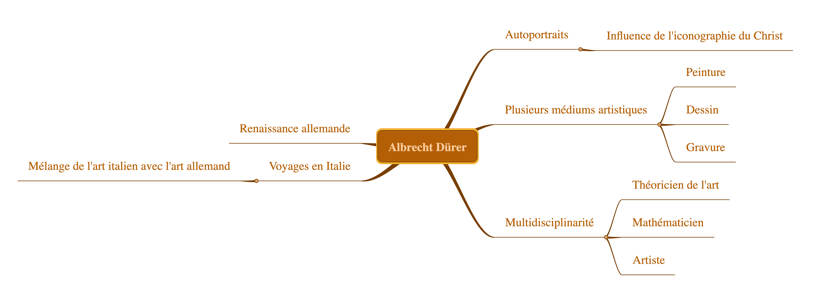

Ce site web constitue l’aboutissement de notre projet universitaire en histoire de l’art mené dans le cadre de notre deuxième année d’études au sein du cours intitulé Compétences et culture numérique à la Sorbonne Panthéon. Ce travail représente à la fois une mise en pratique de nos acquis académiques et une occasion de croiser nos intérêts personnels autour d’un sujet qui nous intéresse particulièrement. Nous sommes trois étudiantes admiratives de l’œuvre du grand maître de la Renaissance allemande, Albrecht Dürer, figure emblématique dont l’héritage artistique continue d’influencer les historiens de l’art comme les artistes contemporains.
À travers ce site, nous avons choisi de concentrer notre étude sur un aspect particulier de son œuvre : les portraits et autoportraits. Ces représentations à la fois intimes et symboliques témoignent non seulement du talent technique de Dürer mais aussi de sa profonde réflexion sur l’individu, la spiritualité et la place de l’artiste dans la société. Notre projet vise ainsi à interroger l’évolution de la représentation de soi dans l’art occidental, en prenant pour point de départ les œuvres de Dürer. Nous tenterons d’en dégager les enjeux esthétiques, techniques et philosophiques tout en mettant en lumière les significations que ces œuvres peuvent renfermer.
L’objectif de ce site est de proposer une analyse approfondie des principaux portraits et autoportraits réalisés par Dürer. Nous accorderons une attention particulière à l’iconographie utilisée par l’artiste, aux choix stylistiques qu’il opère, ainsi qu’à la manière dont ses œuvres dialoguent avec les idées de leur temps. Nous explorerons également les influences religieuses, notamment protestantes, qui marquent certaines de ses créations, ainsi que la manière dont ces idées circulaient et se transformaient à travers l’Europe de la Renaissance, influençant l’art de façon parfois subtile, parfois manifeste.
Nous avons pu commencer nos recherches à partir de la réalisation d'une carte mentale comme vous pouvez le voir ci-dessus. On a pu y mettre en relation les différents aspects du sujet que nous connaissions. À partir de là, l'article Wikipédia nous a orienté afin d'explorer certaines caractéristiques de l'art du peintre. Aussi, la réalisation de commentaire webographiques nous a aidé à mieux comprendre quel intérêt chaque source trouvée pouvait avoir. Nous les avons ainsi toutes consignées dans un tableau que vous pourrez retrouver en bas de la page "webographies"
Ce travail nous a permis de mieux connaître le peintre Albrecht Dürer et le rôle capital qu'il a joué à son époque ainsi que toutes les disciplines qu'il a influencé, chose dont nous ne nous rendions pas forcément compte avant d'avoir entamé ce projet.
Nous espérons que ce travail arrivera à piquer votre curiosité et pourra enrichir votre compréhension de l’univers de Dürer, de son époque, et plus largement de la richesse des représentations de l’humain dans l’histoire de l’art. Ce site se veut à la fois pédagogique, analytique et accessible à toute personne curieuse de découvrir ou redécouvrir l’œuvre fascinante de cet artiste visionnaire.